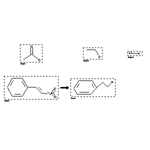

 |
| FA | RX(1); FLST(1); RX(1) |
Reaction (1 of 1)
| Reaction ID | 7445129 |
| Reactant BRN | 506007; 1718733; 1098214; 2042432 |
| Reactant | colloid/al platinum; acetic acid; ethanol; hydrochloric acid; (2-nitro-vinyl)-benzene |
| Product BRN | 507488 |
| Product | phenethylamine |
| No. of Reaction Details | 1 |
Reaction Details (1 of 1)
| Reaction Classification | Chemical behaviour |
| Pressure | 1471.02 |
| Other Conditions | Hydrogenation |
| Comment | Handbook |
| Citation Pointer | 1683633; Patent; Skita; DE 406149; FTFVA6; Fortschr.Teerfarbenfabr.Verw.Industriezweige; DE; GE; 14; 343; |
Reference (1 of 1)
| Citation Number | 1683633 |
| Document Type | Patent |
| Patent Author | Skita |
| Patent Number | DE 406149 |
| CODEN | FTFVA6 |
| Journal Title | Fortschr.Teerfarbenfabr.Verw.Industriezweige |
| Country Code | DE |
| Language Code | GE |
| (Series) Volume | 14 |
| Page | 343 |